and
and  , zero for
, zero for  pairs of quarter-wave layers
pairs of quarter-wave layers  over a stop band
over a stop band Single layer (derivation)
Wave A reflects at the top surface (
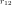
), wave B at the bottom (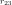
) after a round trip of phase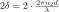
. Summing all multiple reflections: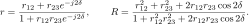
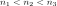
both have the same sign, so the minimum is at
have the same sign, so the minimum is at 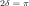
: (or odd multiples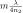
,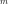
odd, narrower in band). Substituting gives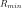
of the summary. For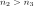
the same thickness gives a maximum: a high-index quarter-wave layer is a weak mirror.Picture: a MgF coating on glass
coating on glass
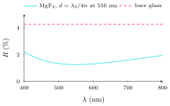
coating designed for 550 nm: the coating removes most of the reflection across the visible.Dielectric mirror
Alternate high and low indices, each a quarter wave thick (
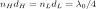
, i.e.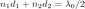
). Reflections at H→L and L→H interfaces have opposite signs, and each extra half-wave of path restores the phase: all reflections add. The reflectance approaches 1 geometrically in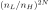
; the reflected band is the photonic stop gap of a 1D photonic crystal. The light penetrates only a few periods, which sets the effective mirror position (important in VCSELs).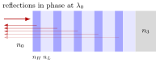
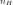
,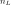
on a substrate , whose reflections add in phase.
, whose reflections add in phase.Worked examples
- AR coating on a silicon solar cell at 900 nm,
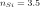
: bare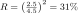
. Ideal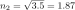
,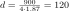
nm. With Si N
N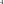
(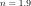
, nm):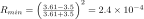
: the cell gains ≈ 30% more photocurrent (solar cells). - MgF on glass (
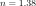
on 1.52), 550 nm: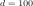
nm,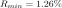
instead of 4.26% — not zero because MgF is not 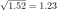
; the residual purple tint of camera lenses is the rising at both ends of the band.
at both ends of the band. - TiO/SiO mirror on glass (2.3/1.46,
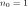
, ) at 1550 nm: layers 168 nm and 265 nm;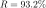
, 98.9%, 99.81%, 99.97% for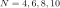
; stop band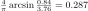
, i.e. 445 nm wide. - VCSEL mirror GaAs/AlAs (3.59/2.97): the small contrast needs ≈ 20–25 pairs for
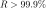
, as required by a gain path of only a few tens of nm (VCSELs).
Thin-film colours and measurement
A film thicker than the coherence length of the light behaves incoherently (intensities add); a film of a few hundred nm in white light shows interference colours (soap bubbles, oxide layers). The transmission spectrum of a film on a substrate oscillates between maxima and minima at
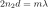
and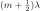
: from two adjacent extrema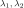
,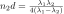
— the standard way to measure film thickness or index.Engineering applications
AR coatings on lenses, solar cells, laser facets and detectors; HR coatings and output couplers of lasers; DBR mirrors of VCSELs and RCLEDs; dichroic filters and DWDM thin-film filters (Fabry–Perot cavities between two stacks); edge filters and hot mirrors.
Exam-style exercise
A GaAs laser facet (
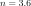
) at 850 nm must be AR-coated. (a) Ideal index and thickness. (b) Reflectance with AlO (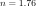
). (c) To make the opposite facet a mirror with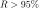
using Si (3.5)/SiO (1.45) pairs, how many pairs?
Solution
(a) ,
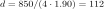
nm. (b)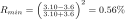
(bare facet: 32%). (c) Light arrives from GaAs (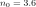
), exit into air (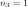
):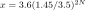
;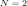
: , ; : , ; : , . Four pairs. The high contrast of Si/SiO makes mirrors very short.
Pitfall
is the quarter wave inside the layer: divide by  . And in the mirror formula is the medium the light comes from, the substrate behind the stack.
. And in the mirror formula is the medium the light comes from, the substrate behind the stack.